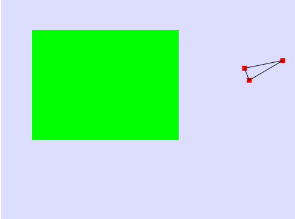
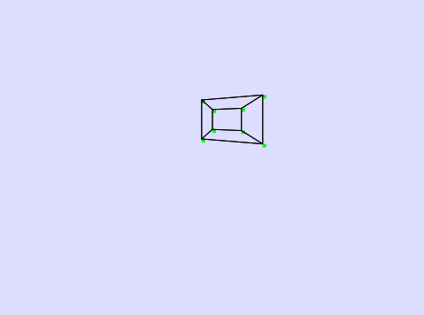
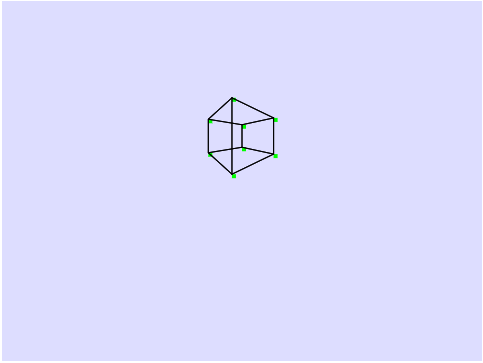

As this project was my first attempt at using JavaScript for anything, I was unsure how the code would turn out. I also was not sticking to many JavaScript conventions as I was also
just trying to familiarize myself with the fundamentals of computer graphics and graphics processing. Although after completing the 2D engine I did go back and implement some error checking
since JavaScript is a loosely typed language.
I started out working on the 2D engine, by simply making Vector and Matrix classes in JavaScript. These were the key building blocks that needed to be tackled first. Then I moved on to creating
Data structures that represent a 2-dimensional Point, as well as a Triangle(a collection of 3 points). Next I amended the Matrix class to allow for such operations as Translation(moving across the screen) and Rotation(following a circular path
around a point).
When starting the 3-dimensional engine, I was able to reuse much of the code I used in the 2-dimensional version. I just had to alter a few of the classes to allow for a 4th component, such as the vector class
now holding an array of size 4. Much of what I had to add was the Geometry class and the Face class, which allowed me to make 3D shapes, or more specifically Cubes. As this is just a personal project and
is not meant for actual use as of right now, that is the only shape it can create.
Lastly, to complete the 3-dimensional aspect, I had to create a plane to project the cube on as well as a smaller plane that acts as the "camera" for the scene. This was the last thing I had added to the project
before putting it on the shelf to work on other things. One addition that may be added is the ability to move the camera in the scene by interacting with the webpage.
A simple triangle rotating around a point

A 3D cube rotating about the X axis

